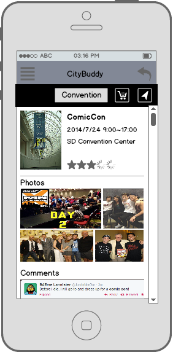

-
We are PathGeo.
Providing geointelligence and location-based knowledge solutions with geotargeted social media APIs and web tools to monitor mobile social web.
See Pathgeo's features Contact us -


-

-
Our professional services: Social Media Analytic Consulting Services
A real-time web-based social media geo-search tool that allows users to retrieve social media feedbacks.Data Investigation and Processing
PathGeo provides geo-targeting and real-time web tools for listening, analyzing, and engaging social web (social media and web pages) in marketing, brand analysis, public opinions, and customer engagement.
Creating Analytical Graphs & Maps
PathGeo provides geo-targeting and real-time web tools.
Indentifying Key influencers
Learn about our Geo-Targeting API's & Social Media Analytics Reports sdfsdfsdf
Identiying Weekly Hot Topics & Hot Keywords
PathGeo provides geo-targeting and real-time web tools for listening, analyzing, and engaging social web (social media and web pages) in marketing, brand analysis, public opinions, and customer engagement.
Sentiment Analysis
Reversing Virtual Reality Realization of Our...
Social Media User Behavior Analysis
Learn about our Geo-Targeting API's & Social Media Analytics Reports